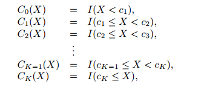
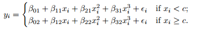
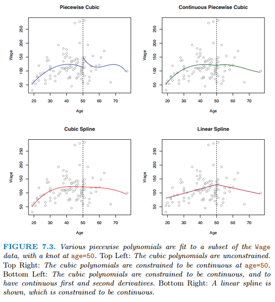
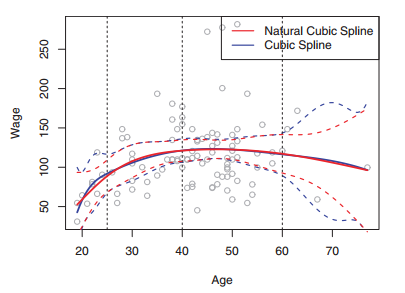
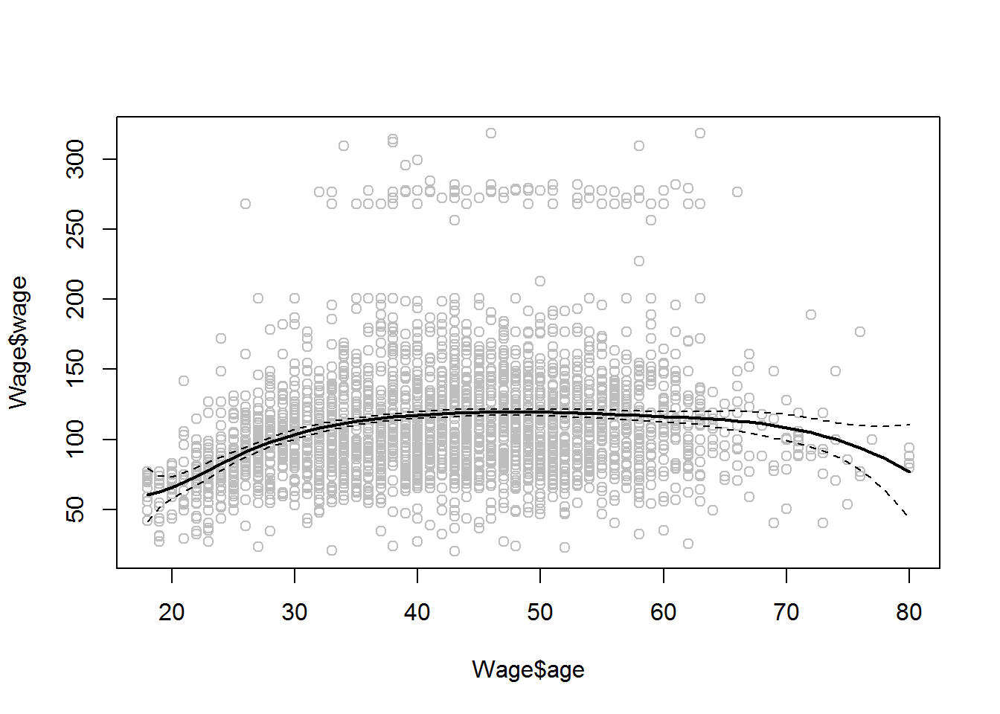
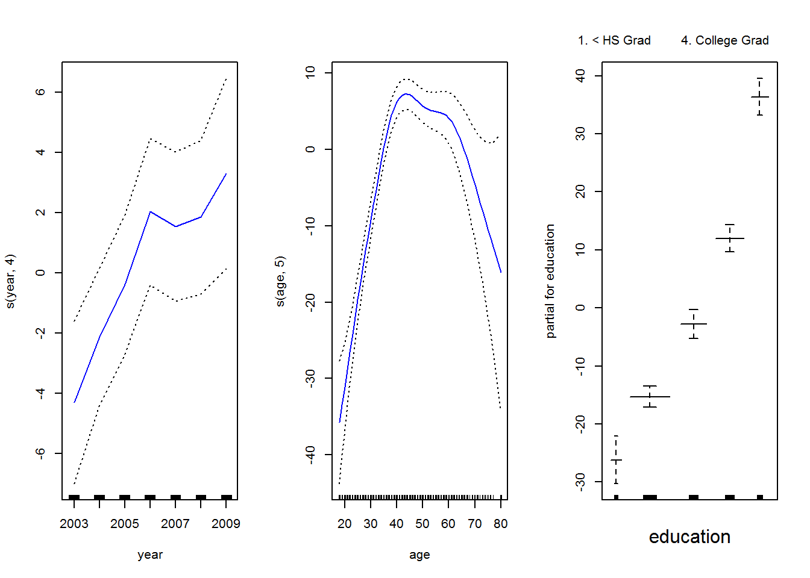

9. Mô hình phi tuyến tính¶
Ở các phần trước, ta đã đề cập đến các kỹ thuật phân tích có tính ứng
dụng thực tiễn cao như linear regression, logistic regression
hay tree based methods. Ở chương này, ta sẽ đề cập nhiều hơn đến các
mô hình mở rộng của regression và sử dụng các mô hình phi tuyến
9.1. Giới thiệu¶
Mô hình tuyến tính như OLS, Ridge, Lasso có rất nhiều nhược điểm và giả
thuyết cần phải thỏa mãm. Ngoài nhánh linear regression, ta còn có
mô hình:
- Polynomial regression: Hàm bậc cao X, \(X^2\), \(X^3\)
- Step functions: Chia biến thành k miền khác nhau
- Regression splines: Chia biến y thành k miền khác nhau, với mỗi miền sẽ xây dựng một polynomial regression sao cho biến y liên tục trên toàn miền
- Smoothing splines: Tương tự như regression splines, nhưng thêm điều kiện tối ưu hóa tổng bình phương sai số
- Local regression: Tương tự như splines nhưng cho phép các miền của biến y chồng lên nhau
- Generalized additive models: Mở rộng tất cả các phương pháp trên
9.2. Polynomial regression¶
Phương trình của polynomial regression
Lưu ý:
- Phương trình trên có thể ước lượng đơn giản với OLS
- Không nên sử dụng \(d \geq 4\)
9.3. Step functions¶
Chia biến y thành các k khu vực (bins), tìm hằng số không đổi cho mỗi bin, thay đổi các biến liên tục thành các biến category có sắp xếp.

9.4. Basis functions¶
Các hàm polynomial và step function (còn gọi là piecewise constant function) là dạng hàm đặc biệt của basis function.
Gọi \(b_i(.)\) là hàm đã biết trước của \(X\), ta có:
- Đối với polynomial: \(b_j(x_i) = x_i^j\)
- Đối với step function: \(b_j(x_i)= I(c_j \leq x_i \prec_{j+1}\)
9.5. Regression splines¶
9.5.1. Piecewise polynomials¶
Hàm piecewise polynomial chia X thành nhiều nhóm, và xây dựng polynomial cho từng nhóm. Điểm mà các hệ số tương quan của X thay đổi giữa các khu vực gọi là knots

Để các hàm splines được smooth, ta giải hệ phương trình để tất cả các điểm trên đồ thị, đạo hàm bậc 1 và 2 đều liên tục.

Lưu ý:
- Cách tính trên có thể được thay bằng giải phương trình của *truncated power basis** (Xem thêm mục 7.4.3)
- Natural splines là phương trình của cubic splines nhưng thêm điều kiện là phương trình phải tuyến tính (linear) tại các điểm biên (boundary constraints)

- Để lựa chọn số lượng knots K, ta sử dụng Cross-Validation. MSE nhỏ nhất sẽ được sử dụng
So sánh với polynomial: Regression splines có những ưu điểm sau so với polynomial:
- Cho phép thêm các knots tại các khu vực mà hệ số tương quan thay đổi nhanh
- Giữ bậc của các biến trong mô hình thấp
9.5.2. Smoothing splines¶
Khi xây dựng mô hình, ta muốn xây dựng một hàm f(x) sao cho RSS là nhỏ nhất. Tuy nhiên, ta có thể biến RSS có giá trị bằng 0 bằng cách chọn f(x) sao cho f(x) bao quanh tất cả các giá trị của y.
Do đó, ta muốn xây dựng đường f(x) sao cho RSS nhỏ nhất đồng thời smooth.
Trong đó:
- \(\lambda\) được gọi là tuning parameter
- \(g\) được gọi là smoothing spline
Đối với phương trình trên:
- \(\sum_{i=1}^n(y_i-g(x_i))^2\) được gọi là loss function, mục tiêu để phương trình lý thuyết và thực tế gần nhau nhất
- \(\lambda\int g^{''}(t)^2dt\) được gọi là penalty của hàm lý
thuyết.
- \(g^{'}\) đo lường độ dốc của các hệ số trong phương trình tại điểm t,
- \(g^{''}\) đo lường độ thay đổi của các hệ số trong phương
trình tại điểm t. Tích phân của \(g^{''}\) đo lường tổng các
sự thay đổi của các hệ số trên toàn miền dữ liệu tính toán.
- Nếu hệ số \(\beta\) trên toàn miền không đổi, phần penalty này sẽ có giá trị bằng 0
- \(\lambda\) càng lớn, phương trình sẽ càng trơn (smooth). Nếu \(\lambda = 0\), phương trình sẽ là các đường nối các điểm \(y_i\). Nếu \(\lambda \rightarrow \infty\), phương trình sẽ là 1 đường thẳng và trở về OLS
Lưu ý: Hàm \(g(x)\) thỏa mãn các điều kiện trên là đường natural cubic splines với các knots là tất cả các điểm riêng biệt \(x_i\)
9.6. Lựa chọn giá trị \(\lambda\)¶
Effective degress of freedom: Xem thêm mục 7.5
9.7. Local regression¶
Xem thêm mục 7.6
9.8. Generalized Additive Models (GAM)¶
Lưu ý: GAM cũng có thể được dùng cho logistic như sau:
9.9. Thực hành¶
9.9.1. Polynomial¶
library(tidyverse)
library(ISLR)
fit <- lm(wage ~ poly(age,4), data = Wage)
fit %>% summary
##
## Call:
## lm(formula = wage ~ poly(age, 4), data = Wage)
##
## Residuals:
## Min 1Q Median 3Q Max
## -98.707 -24.626 -4.993 15.217 203.693
##
## Coefficients:
## Estimate Std. Error t value Pr(>|t|)
## (Intercept) 111.7036 0.7287 153.283 < 2e-16 ***
## poly(age, 4)1 447.0679 39.9148 11.201 < 2e-16 ***
## poly(age, 4)2 -478.3158 39.9148 -11.983 < 2e-16 ***
## poly(age, 4)3 125.5217 39.9148 3.145 0.00168 **
## poly(age, 4)4 -77.9112 39.9148 -1.952 0.05104 .
## ---
## Signif. codes: 0 '***' 0.001 '**' 0.01 '*' 0.05 '.' 0.1 ' ' 1
##
## Residual standard error: 39.91 on 2995 degrees of freedom
## Multiple R-squared: 0.08626, Adjusted R-squared: 0.08504
## F-statistic: 70.69 on 4 and 2995 DF, p-value: < 2.2e-16
9.9.2. Splines¶
library(splines)
fit <- lm(wage∼bs(age ,knots =c(25 ,40 ,60) ),data=Wage )
#Tạo biến mới
agelims <- range(Wage$age)
age.grid <- seq(from= agelims[1], to= agelims[2])
#Dự báo
pred <- predict(fit , newdata =list(age =age.grid),se=T)
#Đồ thị
plot(Wage$age , Wage$wage, col =" gray ")
lines(age.grid, pred$fit, lwd =2)
lines(age.grid, pred$fit + 2* pred$se, lty ="dashed")
lines(age.grid, pred$fit - 2* pred$se, lty ="dashed")

9.9.3. GAM¶
library(gam)
gam1 <- lm(wage∼ns(year ,4) +ns(age ,5) +education , data=Wage )
gam1 %>% summary
##
## Call:
## lm(formula = wage ~ ns(year, 4) + ns(age, 5) + education, data = Wage)
##
## Residuals:
## Min 1Q Median 3Q Max
## -120.513 -19.608 -3.583 14.112 214.535
##
## Coefficients:
## Estimate Std. Error t value Pr(>|t|)
## (Intercept) 46.949 4.704 9.980 < 2e-16 ***
## ns(year, 4)1 8.625 3.466 2.488 0.01289 *
## ns(year, 4)2 3.762 2.959 1.271 0.20369
## ns(year, 4)3 8.127 4.211 1.930 0.05375 .
## ns(year, 4)4 6.806 2.397 2.840 0.00455 **
## ns(age, 5)1 45.170 4.193 10.771 < 2e-16 ***
## ns(age, 5)2 38.450 5.076 7.575 4.78e-14 ***
## ns(age, 5)3 34.239 4.383 7.813 7.69e-15 ***
## ns(age, 5)4 48.678 10.572 4.605 4.31e-06 ***
## ns(age, 5)5 6.557 8.367 0.784 0.43328
## education2. HS Grad 10.983 2.430 4.520 6.43e-06 ***
## education3. Some College 23.473 2.562 9.163 < 2e-16 ***
## education4. College Grad 38.314 2.547 15.042 < 2e-16 ***
## education5. Advanced Degree 62.554 2.761 22.654 < 2e-16 ***
## ---
## Signif. codes: 0 '***' 0.001 '**' 0.01 '*' 0.05 '.' 0.1 ' ' 1
##
## Residual standard error: 35.16 on 2986 degrees of freedom
## Multiple R-squared: 0.293, Adjusted R-squared: 0.2899
## F-statistic: 95.2 on 13 and 2986 DF, p-value: < 2.2e-16
gam.m3 <- gam(wage∼s(year ,4) +s(age ,5) + education ,data= Wage)
gam.m3 %>% summary
##
## Call: gam(formula = wage ~ s(year, 4) + s(age, 5) + education, data = Wage)
## Deviance Residuals:
## Min 1Q Median 3Q Max
## -119.43 -19.70 -3.33 14.17 213.48
##
## (Dispersion Parameter for gaussian family taken to be 1235.69)
##
## Null Deviance: 5222086 on 2999 degrees of freedom
## Residual Deviance: 3689770 on 2986 degrees of freedom
## AIC: 29887.75
##
## Number of Local Scoring Iterations: 2
##
## Anova for Parametric Effects
## Df Sum Sq Mean Sq F value Pr(>F)
## s(year, 4) 1 27162 27162 21.981 2.877e-06 ***
## s(age, 5) 1 195338 195338 158.081 < 2.2e-16 ***
## education 4 1069726 267432 216.423 < 2.2e-16 ***
## Residuals 2986 3689770 1236
## ---
## Signif. codes: 0 '***' 0.001 '**' 0.01 '*' 0.05 '.' 0.1 ' ' 1
##
## Anova for Nonparametric Effects
## Npar Df Npar F Pr(F)
## (Intercept)
## s(year, 4) 3 1.086 0.3537
## s(age, 5) 4 32.380 <2e-16 ***
## education
## ---
## Signif. codes: 0 '***' 0.001 '**' 0.01 '*' 0.05 '.' 0.1 ' ' 1
par(mfrow = c(1,3))
plot(gam.m3, se=TRUE ,col =" blue ")

9.10. Tài liệu tham khảo¶
- Introduction to Statistical Learning - chapter 7